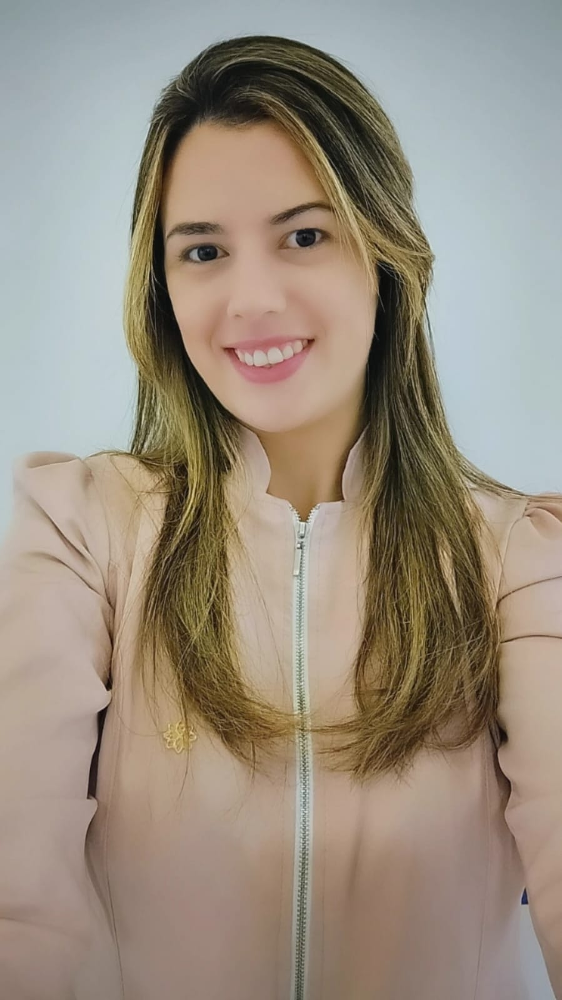

{{ u.bairro }}
{{ u.cidade }}
Capítulo um
Muito antes do diploma, a odontologia já fazia parte da minha rotina: da recepção à auditoria odontológica, passando pelo trabalho como técnica em saúde bucal. Mais de uma década acompanhando de perto cada detalhe do cuidado com pacientes — e aprendendo que técnica só tem valor quando vem acompanhada de escuta e acolhimento.
Capítulo dois
…com a segurança de quem escolheu a profissão conhecendo-a profundamente. Cada atendimento é planejado com responsabilidade e dedicação, em um ambiente pensado para você se sentir cuidado do início ao fim.
"Eu entendo cada detalhe do seu cuidado — porque já vivi todos eles."

CAPÍTULO TRÊS
Sou cirurgiã-dentista e atuo como clínica geral, atendendo famílias inteiras — das crianças aos avós. Trago para cada consulta a experiência de quem conhece a odontologia pelos dois lados da cadeira: com olhar técnico apurado e o compromisso de tornar cada visita mais leve e humana.
CRO-SP 176648 · Atendimento em São José dos Campos e Mogi das Cruzes
Capítulo quatro
{{ d.texto }}
Arraste para o lado para ver mais →
Capítulo cinco
Toque em um procedimento para entender, em linguagem simples, do que se trata.
{{ selNome }}
{{ selDesc }}
Capítulo seis
Arraste para o lado para ver mais →
Convênios atendidos
Também atendo particular. Consulte disponibilidade do seu plano pelo WhatsApp.